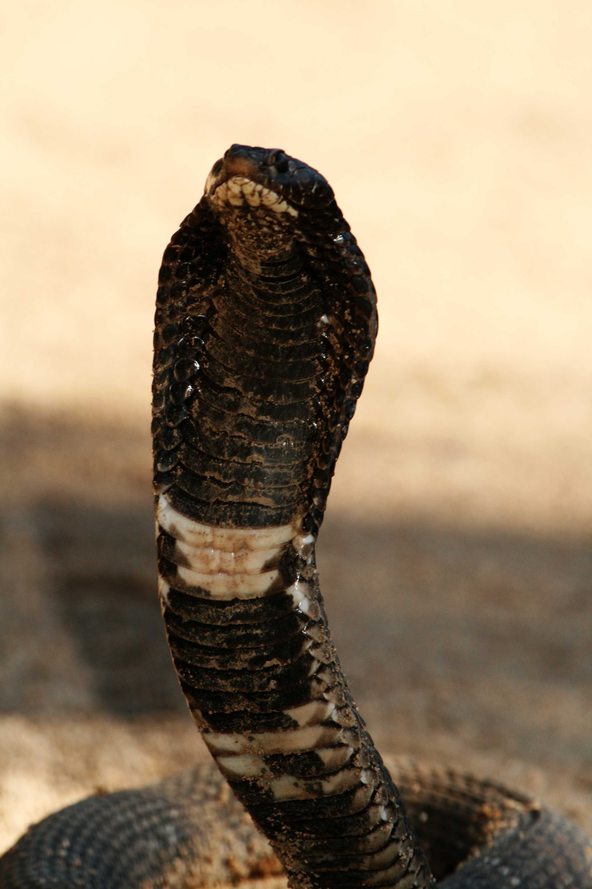

.jpg)
.jpg)

.jpg)
Rinkhals/Ring-necked Spitting Cobra
ชื่อวิทยาศาสตร์: Hemachatus haemachatus
ลักษณะทั่วไป
เป็นงูพิษในวงศ์งูพิษเขี้ยวหน้า (Elapidae) ที่พบในตอนใต้ของทวีปแอฟริกา แม้จะพ่นพิษและแผ่แม่เบี้ยได้คล้ายงูเห่า แต่ไม่ใช่ "งูเห่าแท้" (True Cobra) เนื่องจากไม่ได้จัดอยู่ในสกุล Naja
- Rinkhals เป็นงูที่มีรูปร่างปานกลาง ไม่ยาวหรือผอมเกินไป ตัวค่อนข้างหนาแน่นและแข็งแรง โตเต็มวัยมีความยาวเฉลี่ยประมาณ 90–110 เซนติเมตร (ในบางพื้นที่อาจพบตัวใหญ่สุดได้ถึง 1.5 เมตร) ตาเรียวเล็ก รูม่านตากลม โทนสีเข้มเข้ากับลำตัว
- ลำตัวและเกล็ด: ลำตัวกลมและมีเกล็ดเป็นสันขรุขระ (Keeled scales) ชัดเจน ซึ่งแตกต่างจากงูเห่าแท้ส่วนใหญ่ที่มีเกล็ดเรียบลื่น เมื่อมองหรือสัมผัสจึงรู้สึกขรุขระ
- หัวและคอ: ส่วนหัวสั้นและแบนเล็กน้อย มีโครงสร้างคอที่แผ่ขยายออกเป็น "แม่เบี้ย" ได้เหมือนงูเห่า แต่แม่เบี้ยของ Rinkhals จะมีความแคบกว่างูเห่าแท้
- สีสันด้านบน (ลำตัว): มีสีพื้นเป็นสีเทาเข้ม สีน้ำตาล หรือสีดำสนิท บางประชากรอาจมีลายคาด横เป็นริ้วสีเหลือง สีส้ม หรือสีครีมพาดผ่านลำตัว
- สีสันด้านล่าง (ใต้ท้อง): มีสีเทาเข้มถึงดำ แต่มีจุดเด่นคือแถบสีขาว ครีม หรือเหลืองอ่อน 1–3 แถบ คาดบริเวณใต้คอ ซึ่งจะเห็นได้อย่างชัดเจนเมื่อ Rinkhals ชูคอและแผ่แม่เบี้ย
- อาหารหลัก: คางคก ถือเป็นอาหารโปรดและอาหารหลักของ Rinkhals โดยพวกมันมีความต้านทานต่อสารพิษบนผิวหนังของคางคกได้เป็นอย่างดี
- อาหารเสริม: หากคางคกขาดแคลน มันจะล่ากบ สัตว์เลื้อยคลานขนาดเล็ก (เช่น กิ้งก่า หรืองูชนิดอื่น) นก สัตว์ฟันแทะ และสัตว์เลี้ยงลูกด้วยนมขนาดเล็ก
- การล่าเหยื่อ: ออกล่าทั้งในเวลากลางวันและกลางคืน โดยอาศัยสายตาและการสะบัดลิ้นเพื่อดมกลิ่นค้นหาเหยื่อ เมื่อเจอจะฉีดพิษใส่เพื่อให้เหยื่อหมดแรงหรือตายก่อนกลืนกิน
Rinkhals เป็นงูสายพันธุ์ที่เชี่ยวชาญการล่าสัตว์บนพื้นดินเป็นหลัก โดยมีพฤติกรรมกินอาหารดังนี้:
- ไม่ก้าวร้าวโดยไร้เหตุผล: Rinkhals ค่อนข้างขี้อายและมักเลี่ยงการปะทะกับมนุษย์ หากมีทางเลือก มันจะเลื้อยหนีเข้าโพรงหรือกอหญ้าก่อนเสมอ
- การแผ่แม่เบี้ยและพ่นพิษเมื่อถูกต้อน: หากถูกรบกวนจนหนีไม่พ้น Rinkhals จะยกส่วนหน้าของลำตัวขึ้น แผ่แม่เบี้ยกว้าง ส่งเสียงขู่ (Hissing) และ พ่นพิษ ใส่เป้าหมายที่ระยะไกลถึง 2.5 เมตร โดยเล็งไปที่บริเวณดวงตาของศัตรู
- นี่คือจุดเด่นที่สุดของ Rinkhals หากการขู่หรือพ่นพิษไม่ทำให้ศัตรูถอยไป มันจะเข้าสู่โหมดแกล้งตายทันที โดยการ:
- ทิ้งตัวลงกับพื้นแล้วพลิกท้องขึ้นฟ้า
- อ้าปากค้างไว้ บางครั้งอาจมีน้ำลายหรือเลือดไหลออกมาจากปาก
- ลำตัวจะปวกเปียกเหมือนตายแล้วจริงๆ
- ข้อควรระวัง: หากมนุษย์เข้าไปเอามือจับ ตัวมันอาจแว้งกลับมาฉีดพิษหรือกัดได้ทันทีเพราะมันเพียงแค่รอจังหวะหลบหนี
ถิ่นอาศัย พิษ และความอันตราย
- ถิ่นอาศัย:
- แอฟริกาใต้: กระจายตัวครอบคลุมหลายจังหวัด โดยเฉพาะทางตอนใต้ ตอนตะวันออก และตอนกลางของประเทศ เช่น จังหวัดเวสเทิร์นเคป (Western Cape), อีสเทิร์นเคป (Eastern Cape), ควาซูลู-นาทาล (KwaZulu-Natal), ฟรีกระState (Free State), เคาเต็ง (Gauteng) และอึมปูมาลังกา (Mpumalanga)
- เอสวาตีนี (สวาซิแลนด์): พบได้แพร่หลายทั่วประเทศ
- เลโซโท: พบกระจายตัวตามพื้นที่ภูเขาและทุ่งหญ้าสูง
- ซิมบับเว: มีประชากรกลุ่มแยกขนาดเล็กอาศัยอยู่เฉพาะทางตอนตะวันออกของประเทศ (Inyanga Highlands)
- ทุ่งหญ้าและพื้นที่ชุ่มน้ำ (Grasslands & Wetlands): เป็นถิ่นอาศัยหลักที่ชอบมากที่สุด เนื่องจากมีคางคกและกบซึ่งเป็นอาหารโปรดอยู่อย่างชุกชุม
- ป่าพุ่มไม้เตี้ยและไม้พุ่มเฉพาะถิ่น (Fynbos): พบได้บ่อยตามแถบชายฝั่งตะวันตกและใต้ของแอฟริกาใต้
- ก้อนหินและกองไม้: มักใช้เป็นที่นอนผึ่งแดด (Basking) ในช่วงเช้าเพื่อปรับอุณหภูมิร่างกาย
- โพรงดินและกอหญ้าหนา: ใช้เป็นที่ซ่อนตัว หลบภัย และกบดานในช่วงเวลาที่ไม่ได้ออกล่า
- เขตชุมชนใกล้เมือง (Peri-urban areas): ในบางครั้งอาจพบ Rinkhals เลื้อยเข้ามาใกล้บริเวณสวน บ้านเรือน หรือฟาร์มของมนุษย์ เพื่อตามหาแหล่งน้ำและอาหาร
- พิษ:
- 1. กรณีถูกกัด (Envenomation via Bite)
- ปวดรุนแรงทันที: รู้สึกปวดบวมและร้อนผ่าวบริเวณแผลกัด
- บวมโตอย่างรวดเร็ว: บริเวณที่ถูกกัดจะบวมฉิ่งและอาจขยายกว้างขึ้นเรื่อยๆ
- เนื้อเยื่อเน่าตาย (Necrosis): ผลจากพิษ Cytotoxic ทำให้เซลล์ผิวหนังและกล้ามเนื้อรอบๆ แผลตาย กลายเป็นสีดำ และอาจหลุดล่อนเป็นแผลเปื่อยลึกในภายหลัง
- ง่วงซึมและอ่อนแรง: กล้ามเนื้อเริ่มอ่อนแรง หนังตาตก (Ptosis) พูดไม่ชัด
- หายใจลำบาก: หากได้รับพิษปริมาณมาก พิษ Neurotoxic จะเริ่มอัมพาตกล้ามเนื้อระบบทางเดินหายใจ อาจถึงตายหากรักษาไม่ทัน
- อาการอื่นๆ: คลื่นไส้ อาเจียน มึนงง และปวดท้อง
- 2. กรณีถูกพ่นพิษใส่ตา (Venom Sprayed into Eyes)
- ปวดแสบร้อนรุนแรง: รู้สึกแสบร้อนทันทีที่พิษสัมผัสกับกระจกตา
- ตาแดงและน้ำตาไหลไม่หยุด: เยื่อบุตาอักเสบอย่างรุนแรงและเปลือกตาบวมช้ำ
- มองเห็นไม่ชัด: ภาพพร่ามัว ชั่วคราว หรือตาไม่สู้แสง (Photophobia)
- อันตรายระยะยาว: หากไม่ได้รับการล้างออกทันที พิษอาจกัดกร่อนกระจกตา ทำให้เกิดแผลเป็น หรือนำไปสู่ การตาบอดถาวรได้
-
ระดับความอันตราย: อันตราย ☠☠☠☠:
- พิษเป็นแบบผสม ทั้งทำลายระบบประสาท (Neurotoxic) และทำลายเซลล์ (Cytotoxic) แม้โอกาสโดนกัดจนเสียชีวิตจะน้อยกว่างูเห่าแท้ แต่ความเสี่ยงที่เนื้อเยื่อจะเน่าตายจนต้องตัดอวัยวะ หรือพิษเข้าตาจน ตาบอดถาวร นั้นสูงมาก
- พ่นพิษได้ไกลถึง 2.5 เมตร และเล็งเป้าหมายที่ดวงตาได้อย่างแม่นยำ อีกทั้งยังมีพฤติกรรม "แกล้งตาย" ซึ่งอาจฉลบหลอกให้คนประมาทเข้าไปจับ แล้วแว้งกัดฉีดพิษเต็มแรงในภายหลัง
- เป็นงูเฉพาะถิ่นในแอฟริกาใต้ จึงพบเจอได้เฉพาะผู้ที่อยู่อาศัยหรือเดินทางไปในภูมิภาคนั้น แต่ในพื้นที่กระจายตัว มันสามารถเลื้อยเข้าใกล้เขตชุมชน ทุ่งหญ้าเลี้ยงสัตว์ และฟาร์มเรือนของมนุษย์ได้บ่อยครั้ง
Rinkhals ถูกจัดให้อยู่ในระดับอันตรายสูง แม้จะไม่ใช่งูที่ดุร้ายรุกรานก่อน แต่กลไกการป้องกันตัวรอบด้านทั้งการพ่นพิษใส่ตา การกลิ้งแกล้งตาย และพิษที่ทำลายทั้งประสาทและเนื้อเยื่อ ทำให้มันเป็นอันตรายรุนแรงต่อมนุษย์หากเข้าใกล้โดยไม่ระวัง
Rinkhals มีขอบเขตการอยู่อาศัยหลักๆ ใน 4 ประเทศหลัก ได้แก่:
Rinkhals ปรับตัวให้เข้ากับสภาพภูมิอากาศแบบอบอุ่นถึงเขตร้อน โดยมักพบในลักษณะพื้นที่ดังต่อไปนี้:
พิษของ Rinkhals มีความพิเศษและอันตรายเนื่องจากเป็นพิษผสม 2 รูปแบบหลัก คือ พิษทำลายระบบประสาท (Neurotoxic) และ พิษทำลายเซลล์และเนื้อเยื่อ (Cytotoxic) ทั้งนี้ อาการจะขึ้นอยู่กับรูปแบบที่ได้รับพิษ ไม่ว่าจะเป็นการถูกกัดโดยตรงหรือการถูกพ่นพิษเข้าดวงตา
อาการเฉพาะที่ (บริเวณที่ถูกกัด):
อาการทางระบบประสาทและร่างกาย (Systemic Symptoms):
Rinkhals มักเล็งพ่นพิษใส่ดวงตาของศัตรู หากพิษเข้าตาจะเกิดอาการอย่างฉับพลัน:
Fun Fact
- แม่เบี้ยปลอม แต่พ่นพิษของจริง: Rinkhals สามารถแผ่แม่เบี้ยและพ่นพิษใส่ศัตรูได้เหมือนงูเห่าพ่นพิษ (Spitting Cobra) แต่ในทางอนุกรมวิธาน มัน ไม่ใช่ "งูเห่าแท้" (True Cobra) เพราะไม่ได้อยู่ในสกุล Naja โดย Rinkhals เป็นงูเพียงชนิดเดียวในสกุล Hemachatus
- งูพ่นพิษชนิดเดียวที่ "ออกลูกเป็นตัว": ในขณะที่งูเห่าและงูพ่นพิษสายพันธุ์อื่นทั้งหมดในโลกจะออกลูกเป็นไข่ (Oviparous) Rinkhals กลับเป็นงูพ่นพิษเพียงชนิดเดียวที่ ออกลูกเป็นตัว (Ovoviviparous) โดยคลอดลูกออกมาครั้งละ 20–35 ตัว (เคยมีบันทึกสูงสุดถึง 60 ตัว) และลูกงูที่เพิ่งเกิดมาก็พร้อมพ่นพิษและแกล้งตายได้ทันที
- แกล้งตายเนียนขั้นสุด (Thanatosis Master): Rinkhals ไม่ใช่แค่ทิ้งตัวนิ่งๆ แต่เมื่อแกล้งตาย มันจะพลิกตัวเอาท้องขึ้น อ้าปากค้าง บางครั้งลิ้นจะห้อยออกมา และอาจแกล้งหลั่งเลือดหรือน้ำลายออกจากปากเพื่อความสมจริง หากมีคนประมาทคิดว่ามันตายแล้วเข้าไปจับ Rinkhals พร้อมที่จะแว้งกัดฉีดพิษเต็มแรงทันที